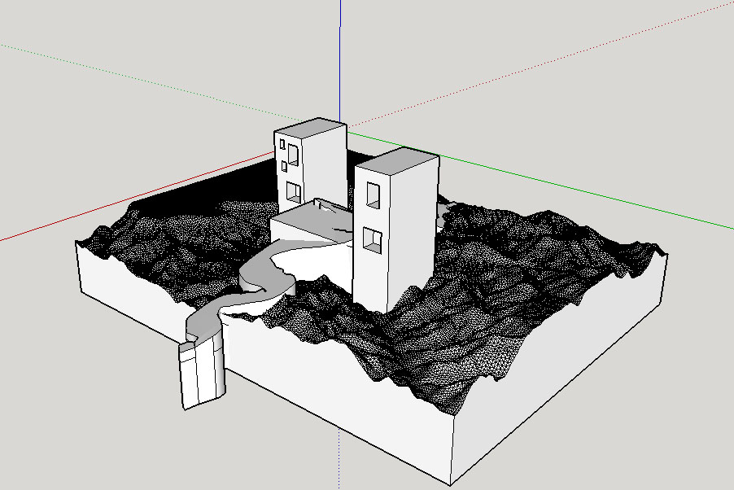

3D Landscape
-

When this project was first presented to me, I immediately wanted to use one of the seven wonders of the world, but I was also extremely interested in the Grand Canyon because the terrain itself seemed really fun to work with. I was fascinated with the Grand Canyon because my goal in life is to be a photographer, so that I am able to travel the world and see the things that I was never able to see before. The Grand Canyon is literally one of the top five places that I want to go see first as soon as I am able too. My partner, Alex, chose Lombard Street in San Francisco because